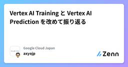

Google Cloud Japanのフィード
https://zenn.dev/p/google_cloud_jp
Google Cloud Japan のエンジニアを中心に情報発信をしている Publication です。Google Cloud サービスの技術情報を中心に公開しています。各記事の内容は個人の意見であり、企業を代表するものではございません。
フィード

Google 社員はこう使う！ Gemini for Google Workspace 活用術3選
Google Cloud Japanのフィード
この記事は Google Cloud Japan Advent Calendar 2024 (Gemini編) の12/19の記事です。こんにちは！Google Cloud の Customer Engineer の Noriko です。2024年も残すところわずかとなりました。今年は生成AIが急速に普及し、私たちの働き方にも大きな変化をもたらした一年でしたね。皆さんは、日々の業務に生成AIをどのように活用していますか？本記事では、Google 社員が Gemini for Google Workspace をどのように活用しているのか、具体的なユースケースをご紹介します。ぜひ、...
7時間前

Pipe syntaxはSQLの未来を変えるのか
Google Cloud Japanのフィード
Google Cloud Japan Advent Calendar 2024 通常版 の19日目の記事です。本日のテーマは、BigQuery の Pipe syntaxです。 tl;drPipe syntaxを使うと、標準SQLよりもシンプルに直感的にSQLが書けますPipe syntaxはSQLにパイプ構文を取り込むことでSQLの改善を目指していますSQLのテストもしやすくなります Pipe syntaxとは2024年に以下の題名の論文が発表されました。「SQL Has Problems. We Can Fix Them: Pipe Syntax In S...
14時間前

Looker スケジュール配信の仕組み
Google Cloud Japanのフィード
LookerではSlackやGoogle Driveなど他のツールに対し、スケジュール機能を利用してデータを送信することができます。スケジュールを設定して配信されるデータは、Lookerアプリケーション自身がデータを直接配信先に送信しているのではなく、通称Action HubというLookerとは別のサーバーを介して送信しています。なおメールのデリバリはAction HubサーバーではなくSMTPサーバーを介して実施されています。本記事ではスケジュールを実行した際にAction Hubサーバーを含めどのようにデータが送信されているかの概要について解説した後、実行されたスケジュールジョ...
15時間前

Looker x GenAI - Query Insights で色々やってみた
Google Cloud Japanのフィード
Google Cloud Japan Advent Calendar 2024 18 日目＆Looker Advent Calendar 2024 18 日目の記事です！本記事では今年一部界隈で盛り上がりを見せた BI 領域における生成 AI 活用のカスタムソリューションである Looker x GenAI Extensions, その中でも私一押しの Extension である Query Insights について深掘りしていきたいと思います。 はじめにそもそも Looker x GenAI Extensions って何？という方も多いと思います。Looker x Ge...
2日前

Vertex AI での Gemini モデルのチューニング
Google Cloud Japanのフィード
この記事は Google Cloud Japan Advent Calendar 2024 (Gemini特集版) の 18 日目の記事です。本記事では Google Cloud の Vertex AI で行う Gemini モデルのチューニングについて記載しています。 Gemini モデルのチューニングについてLLM を活用していく中で特定のタスクに対する精度向上を行いたいというケースはよくあるかと思います。もちろんプロンプト内で少数の例を学習させる Few-shot Learning や Gemini の特徴である Long Context を活かして、さらに多くの例を学習さ...
2日前

Spannerのスプリット統計をBigQueryに自動保存し分析する
Google Cloud Japanのフィード
スプリット統計とは？Spanner のスプリット統計（Split statistics）という機能が 2024 年 10 月に GA となりました。Spanner にある SPANNER_SYS.SPLIT_STATS_TOP_MINUTE という統計テーブルにクエリ（SELECT）することで、ホットとなっているスプリット、すなわち負荷が高いスプリットが時系列でわかるようになってます。また合わせてこの統計テーブルの情報を Cloud Console から手軽に確認できるホットスポットの分析情報（Hotspot Insights）も登場しました。この情報から、ホットスポットになり続...
2日前

Gemini利用環境の解説(Google AI Studio,Vertex AI Studio,Gemini for Google etc)
Google Cloud Japanのフィード
こんにちは、メディア・エンターテイメント業界 担当の Customer Engineer の Dan です。本記事は Google Cloud Japan Advent Calendar 2024 Gemini 特集版 の 16 日目の記事です。上記 Advent Calendar に掲載されている他の記事を見ていただけると分かる通り、Gemini といってもその利用環境やサービスとして、Google AI Studio、Vertex AI Studio、Gemini for Google Workspace、Gemini in BigQuery、Gemini Code Assist...
2日前

Google Distributed Cloud（GDC）connected のご紹介
Google Cloud Japanのフィード
Google Cloud Japan Advent Calendar 2024 の 7 日目です。（7日目が空いていたので、遅ればせながら記事を投稿しています！）こんにちは。Google Cloud カスタマーエンジニアの Koto です。こちらの記事では、まだあまり知られていない（?）Google Distributed Cloud connected について概要を紹介したいと思います！ Google Distributed Cloud（略称：GDC）とは?GDC は、Google Cloud の技術を自社のデータセンターやエッジ環境に拡張する、ハードウェアとソフトウェア...
2日前

フツーのデータベースとしてのSpannerを使うには 1
1
Google Cloud Japanのフィード
この記事の目的Spannerはスケーラビリティに優れたデータベースであると説明されることの多いデータベースです。スケーラビリティの面が強調された結果、「Spannerは何か特殊なデータベースではないか」「名前は聞いたことあるけど、普通のアプリケーションでは使えないんでしょ」というイメージを持たれていると感じています。スケーラビリティに特長があるのは事実ですが、データベースとしてみるとテーブル定義とデータ型があり、トランザクションが実行可能で、SQLでクエリーや更新ないわば「普通のリレーショナルデータベース」としての側面もあります。実際にSpannerを普通のリレーショナルデータベ...
2日前

時間がない人のための Gemini 2.0 入門
Google Cloud Japanのフィード
時間がない人のための Gemini 2.0 入門US 時間の 12/11、日本時間だと 12/12 早朝（12/11 深夜）に Gemini 2.0 の Flash が出てきました。 待望の Multimodal Live API の登場や、各種デモ動画など見どころが沢山ありました。きっと年末にむけて忙しくされている皆様は全てのブログ、動画、ドキュメントは見ていられないと思います。 そんな忙しい方向けに、独断と偏見でこれだけは知っておいてほしいことをまとめてみました。 Gemini 2.0 とは？DeepMind のブログを参照してまとめると。Google DeepMi...
3日前

Gemini 2.0 Multimodal Live API でリアルタイムマルチモーダルアプリケーションを構築しよう！
Google Cloud Japanのフィード
皆さん、こんにちは！Google Cloud Japan Advent Calendar 2024 運営です。この記事は Google Cloud Japan Advent Calendar 2024 Gemini特集版 15 日目の記事です。 はじめにGoogle が発表した最新の AI モデル、Gemini 2.0 は、マルチモーダルな入力と出力、長い文脈の理解、高度な推論能力を備えています。その中でも特に注目すべきは、リアルタイムストリーミング機能を提供する Multimodal Live API です。この API を使用すると、音声、動画、テキストなど、複数のモダリテ...
3日前

Google Cloud VMware Engine のメリットとアーキテクチャ概要
Google Cloud Japanのフィード
Google Cloud Japan Advent Calendar 2024 16 日目の記事です！ TL;DRVMware Engine は Google Cloud ファーストパーティの IaaS として活用できますVMware Engine のアーキテクチャを理解する上では、Google Cloud サービスとしてどのようにデプロイされるか、vSphere クラスタとしてどのように構成されているか、の双方の視点で知ることが有効ですGoogle Cloud と VMware ソリューションの組み合わせにより提供できるメリットがいくつかあります はじめに2020 ...
4日前

GKEのアップグレードのログを眺める
Google Cloud Japanのフィード
Google Cloud Japan Advent Calendar 2024の14日目の記事です．Kubernetesを運用しているとどうしても避けられないのがアップグレードです．Google Cloud上のマネージドなKubernetes環境を提供するGKEでも例外ではありません．GKEには様々なアップグレードタイミングをコントロールして影響を抑えることができる機能がありますが、それでもアップグレードの仕組みを知らなければ予期しない一時的なワークロードへの影響を与えてしまう可能性があります．この記事では、アップグレードで何が起きるか説明し、その様子をログなどから観察する方法を説...
6日前

Vertex AI Training と Vertex AI Prediction を改めて振り返る
Google Cloud Japanのフィード
Vertex AI Training / Prediction を改めて振り返るGoogle Cloud Japan Advent Calendar 2024 の 12 日目です。今年も生成 AI という言葉を耳にタコができるぐらい聞き、口から火が出るぐらい話し続けました。ほとんどの検証が Vertex AI Studio や API コールだけで完結することが多く、生成 AI 以前からあった Vertex AI の機能にふれる機会が減ってしまいました。しかし！その間にも着実に進化を遂げた（遂げているはず）の Vertex AI の機能を敢えて振り返ってみようと思います。...
8日前

Gemma 2 を Cloud Run で動かすのは現実的なのか試してみた
Google Cloud Japanのフィード
Google Cloud Japan Advent Calendar 2024 の 10 日目にリリースすることを目指していた記事です。本日のテーマは Cloud Run で Gemma 2 を動かす方法、そして GKE を利用した場合との違いについて簡単にご紹介する記事です。GKE で Gemma 2 を動かす方法については今年のアドベント カレンダーの 3 日目の記事である Gemma2 を GKE 上でいい感じに動かしたい (推論編) に解説がありますので、よろしければそちらも併せて読んでいただけますと幸いです。なお、本記事はあくまでも Cloud Run がメインなので推論ラ...
8日前
Media CDN の 2 つのリクエストログ
Google Cloud Japanのフィード
この記事は Google Cloud Japan Advent Calendar 2024 7 日目の記事です。 TL;DRCloud Logging に出力される Media CDN のアクセスログは クライアントから Media CDN（EdgeCacheService）へのリクエストログ と Media CDN（EdgeCacheService）からオリジンへのリクエストログ の両方が含まれている。クライアントから Media CDN へのリクエストログ と Media CDN からオリジンへのリクエストログ の判別には、例えば以下ようなフィールドを利用できる。jsonP...
9日前
GeminiでAppSheetのアプリ作成を手軽に楽しくする方法3選
Google Cloud Japanのフィード
こんにちは、 Google Workspace / AppSheet の Specialist SalesをしているAmyです。今日は Google Cloud Japan Advent Calendar 2024 (Gemini編) 、みなさまいかがお過ごしですか？ 今年は寒暖差が激しいですね。珍しく風邪を引いてガラガラ声で絶賛執筆中です。みなさんもくれぐれも体調に気を付けて、暖かくしてお過ごしくださいね。私は昨年と一昨年、AppSheetについて記事をあげてきました。今日の記事では、 Geminiを活用してAppSheetでのアプリ作成をより手軽に楽しくする方法を3つ紹介します...
10日前
Gemma2 + vLLM を GKE 上でいい感じにスケールさせたい
Google Cloud Japanのフィード
Google Cloud Japan Advent Calendar 2024 の 3 日目（だったはず）の記事です。本記事では、GKE Autopilot 上で Gemma2 をいい感じに動的にスケールするようにホストしてみます。今回は推論のユースケースをメインで扱います。また モデルや推論ライブラリのレイヤーでのチューニングなどは（私の知識が不足しているため）扱わず、あくまでインフラ/ GKE のレイヤーで頑張ります、がもし私の認識が間違っている部分やもっとスマートにできる部分などあれば指摘してくださると喜びます。 tl;drGKE Autopilot はノードの動的スケ...
13日前
Vertex AI Vector Search のハイブリッド検索を日本語で試してみた
Google Cloud Japanのフィード
Google Cloud Japan Advent Calendar 2024 6 日目です！こんにちは、カスタマーエンジニアの下門 (しもじょう) です。皆さんは Vertex AI Vector Search に Hybrid Search という機能があるのをご存知でしょうか？簡単に言うと、セマンティック検索とキーワード検索を組み合わせることで、検索精度の向上を図る「ハイブリッド検索」を実現する機能です。キーワード検索は、明確な関連度 (スコア) 計算により結果が解釈しやすく、チューニングも容易ですが、ユーザーの意図や文脈を捉えきれないため、関連性の低い結果が表示されたり、...
14日前
FCM運用のベストプラクティス
Google Cloud Japanのフィード
こんにちは、アドベントカレンダー(物理) を買うか悩んで結局今年も買っていない Cloud Support の Rnrn です。皆さんのおすすめがあったら来年こそ参考にするのでぜひ教えてください😀5 日目 の今日はサポートでも時々お問い合わせいただく Firebase Cloud Messaging (FCM) について、運用時どういったことに気をつけると良いかがテーマです。FCM の問題の調査に時間がかかったり、調査が難航する原因の大部分は情報不足です。いざ問題が起きて調べるぞ！となったときに必要な情報が取得できていなかったということのないように、トラブル発生時に向けた備えを中心にご...
14日前